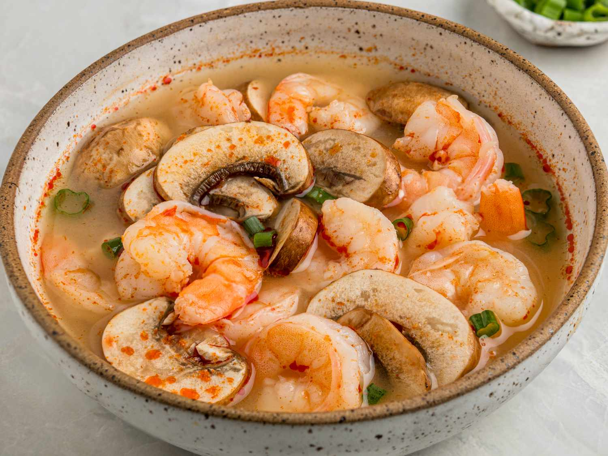

Tom Yum

Description
Tom yum soup is easier to make at home than most hot and sour soup recipes you will find.
I have simplified a sometimes complex recipe for those like me who have a hard time finding some of the original ingredients. This tastes better than any tom yum in the many restaurants I have been to!
Ingredients
- 4 cups vegetable broth
- 1 pound raw shrimp, unpeeled and deveined
- 4 limes, juiced with pulp
- 4 Thai chile peppers, quartered (Optional)
- 2 stalks lemongrass, quartered
- 4 (¼-inch-thick) slices fresh ginger root
- 2 tablespoons tom yum paste
- 1 ½ tablespoons fish sauce
- 1 tablespoon white sugar
- 1 tablespoon chile sauce
- 6 baby bella mushrooms, sliced
- 2 green onions, thinly sliced
Steps
- Gather all ingredients.
- Combine vegetable broth and shrimp in a large pot over medium-high heat. Bring to a low boil for 10 minutes, then lower heat and simmer for 10 minutes.
- Remove shrimp from broth; remove and discard shells. Set cooked shrimp aside.
- Add lime juice and pulp, chile peppers, lemongrass, ginger, tom yum paste, fish sauce, sugar, and chile sauce to broth; cook for 10 minutes.
- Remove chile peppers, lemongrass, and ginger slices with a slotted spoon and discard. Return cooked shrimp to broth and remove the pot from heat.
- Ladle soup into bowls. Top with mushrooms and green onions.
Go Home